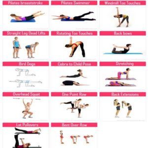
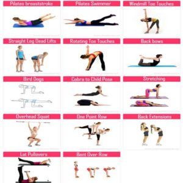

Los 15 mejores ejercicios para una espalda y dorsales en V
2021.12.03 10:40
Buscar Entrena con MH Fitness Los mejores entrenamientos para hombres MH Reto MH Live Ejercicios en casa Ejercicios de abdominales Ejercicios para bíceps y tríceps Ejercicios de pecho Ejercicios de espalda Ejercicios de piernas y glúteos CrossFit Strongman Boxeo Desafío Calistenia MH Desafio MH 21 días Nutrición Los mejores planes nutricionales para hombres MH Dieta para verano Salud Perder peso Actualidad Noticias MH Hombres MH Especial JJOO Tokio 2020 Estilo Moda y belleza Zapatillas Sexo y relaciones Tecnología y gadgets Gadgets y motor Move On El poder de la positividad Buenas compras onnline Síguenos Facebook Twitter Instagram Youtube Flipboard Pinterest Política de cookies Aviso de privacidad Ediciones: US UK España Nederland ENTRENA con MH Coach Nutrición Estilo Salud Síguenos ES ES Lo más leído 1 Mancuernas, barra y pesas rusas para este BF 2 Estilo y tecnología al servicio de tus entrenos Men s Health + Oysho 3 El primer zumo elaborado con fruta ecológica Men s Health + Granini 4 10 claves para practicar fitness Men s Health + El Corte Inglés 5 Las 50 mejores posturas sexuales para el hombre
Men's Health participa en varios programas de afiliación de marketing, lo que significa que Men's Health recibe comisiones de las compras hechas a través de los links a sitios de los vendedores.
Los 15 mejores ejercicios para construir una espalda grande y en forma de V con tus entrenamientos para dorsales
Si no quieres ser el típico pecho-bíceps de gimnasio, sin hombro ni espalda, y con el abdomen olvidado, empieza por entrenar bien tus dorsales. Apunta los 15 mejores ejercicios para esa musculatura en tus entrenamientos de hipertrofia.
Por Tony Gentilcore 17/06/2021 ¿Entrenas bien tu espalda en el gimnasio? Prueba estos 15 ejercicios para unos dorsales de acero en poco tiempo Entrenamiento de espalda: por qué deberías aprender el remo 'fisherman ' Ejercicios de calistenia para espalda en solo 20 minutos Los mejores trucos para entrenar espalda en casa si no tienes pesasEl pecho y los bíceps eran hace años la principal obsesión de los adictos al gimnasio, pero todavía hay algunos que siguen sin entrenar la espalda, lo hombros o las piernas como se debe para tener un cuerpo estético y compensado de verdad. Así que empezaremos con las dorsales y apunta estos 15 ejercicios para lograr una espalda fuerte y en V.
Recuerda que a la hora de organizar tus ejercicios de espalda, se trata de un grupo muscular grande, que permite grandes cargas de trabajo y que incluso puedes ejercitar varios días a la semana. ¿Cómo? Pues dependerá de tus objetivos, pero puedes dedicar un día a ejercicios con barra y mancuernas, como remos varios y series de dominadas buscando el fallo muscular, y otro dándole caña a las máquinas de poleas, con remos sentados o cable al pecho. Y, por supuesto, peso muerto, un básico en cualquier entrenamiento de fuerza, que también dará fuerza y tamaño a tu espalda.
Consejos para tus ejercicios de espalda: busca el máximo recorrido posible para activar bien tus dorsales, prueba los tres tipos de dominadas, supinas, prono y neutras, y no te olvides de vez en cuando de entrenar a fuego tus trapecios con ejercicios como encogimientos con mancuernas.
Los 15 mejores ejercicios para una espalda grande y en forma de V
1- Band bent over row
Con goma elástica en los pies, un remo para dar caña a nuestros dorsales con ambos brazos a la vez. Fundamental la posición de la espalda, recta y sin forzar la zona baja.
Men's Health US2- Renegade row
En posición de plancha, hacemos una flexión y una vez arriba, remo con mancuerna a un mano concentrando el movimiento al máximo, ¡busca la tensión muscular durante todo el recorrido!
Men's Health US3- Remo con mancuerna a una mano
Con una rodilla apoyada en un banco, trabajo de dorsal con remo a una mano con mancuerna pesada. Fundamental mantener la espalda recta y completar un recorrido lo más amplio posible.
Men's Health US4- Remo con mancuerna con el pecho en el banco
Más remo con mancuerna, pero esta vez boca abajo sobre un banco inclinado para sorprender al músculo con esta divertida variante.
This content is imported from YouTube. You may be able to find the same content in another format, or you may be able to find more information, at their web site.5- Remo invertido
Sencillo: si lo haces en casa, debajo de una mesa es una buena opción, y en el gimnasio, en la máquina multipower lo harás con mucha estabilidad y comodidad.
Men's Health US6- Remo a una mano con mancuerna con piernas dobladas
Tronco en posición de 90 grados, rodillas flexionadas y hacemos remo a una mano de manera alterna con mancuerna. Sencillo, ¿no?
Men's Health US7- Remo con barra
Un básico para ganar fuerza en toda la zona de la espalda utilizando una barra olímpica y cuidando al máximo la postura corporal para evitar lesiones y sacar el máximo beneficio a este ejercicio.
Men's Health US8- Bent over underhand barbell row
Un remo similar al anterior, pero con agarre supino de la barra olímpica.
Men's Health US9- Remo en máquina
Fundamental para activar bien las dorsales y poder cargar mucho peso.
Men's Health US10- Dominadas y chin up
Otro básico para ganar fuerza, con todas las variantes y agarres que podamos. Activamos nuestras dorsales, no acortamos el recorrido y atención a la retracción de las escápulas.
Men's Health US11- Polea al pecho
En máquina sentado, polea al pecho sin forzar en exceso los hombros. Las dorsales tiene que hacer todo el trabajo de carga y descarga.
This content is imported from YouTube. You may be able to find the same content in another format, or you may be able to find more information, at their web site.12- Kneeling lat pulldown
Similar al anterior, pero de rodillas en el suelo. No dobles la espalda o puede que te lesiones.
Men's Health US13- Peso muerto
Otro clásico de los trabajos de fuerza y fundamental en cualquier entrenamiento de espalda. Movimiento de powerlifting, que no debe faltar nunca en tus rutinas semanales de entrenamiento.
This content is imported from YouTube. You may be able to find the same content in another format, or you may be able to find more information, at their web site.14- Swings con pesa rusa
Ejercicio del CrossFit, también muy útil y en el que realizamos el impulso con el tren inferior y los brazos solo acompañan el movimiento con suavidad. Es clave la fluidez en este ejercicio, que activa además el core.
This content is imported from YouTube. You may be able to find the same content in another format, or you may be able to find more information, at their web site.15- Front squat
Sentadillas con la barra en los hombros por debajo de la barbilla y bajamos de manera profunda.
Men's Health USY, por supuesto, entrena pesado la espalda, con muchos kilos, siempre que puedas, sobre todo en los ejercicios con polea, que permiten cargar mucho y fuerte, o incluso en las dominadas, haciéndolas con lastre en la cintura, pero sin abusar para evitar lesiones en los codos. Y puestos a elegir un básico, nos quedamos por supuesto con el peso muerto y todas las variaciones de remos.
Dominadas en barra con toallas
Además, te proponemos otro ejercicio top para tu espalda, que consiste en hacer dominadas pero con toallas; es decir, en lugar de agarrarnos a la barra, lo vamos a hacer a unas toallas que cuelgan de la barra. Con este ejercicio, fortaleceremos las dorsales de la espalda pero también los antebrazos, lo que aumenta la dificultad del ejercicio por el tipo de agarre neutro que hacemos. Carga también para los bíceps
This content is imported from YouTube. You may be able to find the same content in another format, or you may be able to find more information, at their web site. Contenidos relacionados Trucos para machacar espalda en casa y sin pesas 4 ejercicios en casa para los bíceps y la espalda 9 ejercicios para una espalda más grande
This content is created and maintained by a third party, and imported onto this page to help users provide their email addresses. You may be able to find more information about this and similar content at piano.io Publicidad - Sigue leyendo debajo Más de Buenas compras online Las 15 mejores zapatillas Nike para hacer deporte ¿Cuántos hombres usan juguetes sexuales? Publicidad - Sigue leyendo debajo Nike tiene una chaqueta BBB: buena, bonita, barata Los mejores consejos para sacarle partido a tu TRX Zuckerberg recomienda este libro sobre creatividad Cómo acabar con la queratosis pilaris en la piel Las mejores zapatillas Adidas para hacer deporte Alimentación deportiva Alimentación deportiva El último Zar de Rusia era culturista en secreto Buenas compras online Ejercicios de espalda Fitness Los mejores trucos para entrenar espalda en casa si no tienes pesas Entrenar en casa: los ejercicios más efectivos para espalda y bíceps Los 15 mejores ejercicios para una espalda grande 9 ejercicios para una espalda más grande ¿Quieres los dorsales de Can Yaman? ¡Haz esto! 10 ejercicios para la espalda con barra Contacto Hearst España Publicidad Suscríbete Entrena con MH Fitness Nutrición Perder peso Estilo Salud Tecnología Sexo y relaciones Men s Health marca perteneciente al grupo Hearst Magazines International Men's Health participa en varios programas de afiliación de marketing, lo que significa que Men's Health recibe comisiones de las compras hechas a través de los links a sitios de los vendedores. ©2021 Hearst España S.L. Todos los derechos sobre las marcas, imágenes y contenidos están protegidos. Aviso de privacidad Política de cookies Aviso Legal Sitemap Ajuste de Cookies
- Los mejores ejercicios para fortalecer la espalda y corregir la .
- Ejercicios de espalda en casa - Mundo Deportivo
- Los 15 mejores ejercicios para una espalda y dorsales en V
- Ejercicios para fortalecer la espalda sin hacernos daño
- 5 ejercicios básicos para lograr una espalda descomunal - AS .
- Los mejores ejercicios para acabar con el dolor de espalda
- 6 ejercicios con el propio peso para una espalda fuerte
- Los 11 mejores ejercicios para entrenar tu espalda en el .
- Guía de ejercicios para la parte baja de la espalda (Back .
- Ejercicios para la espalda en 15 minutos diarios - Mayo Clinic
- Los mejores ejercicios para fortalecer la espalda y corregir la .
en casa · Pues bien, este ejercicio de las dominadas deslizantes es uno de los más reputados a la hora de fortalecer y . - Ejercicios de espalda en casa - Mundo Deportivo
- Los 15 mejores ejercicios para una espalda y dorsales en V
- Ejercicios para fortalecer la espalda sin hacernos daño
- 5 ejercicios básicos para lograr una espalda descomunal - AS .
- Los mejores ejercicios para acabar con el dolor de espalda
- 6 ejercicios con el propio peso para una espalda fuerte
- Los 11 mejores ejercicios para entrenar tu espalda en el .
- Guía de ejercicios para la parte baja de la espalda (Back .
- Ejercicios para la espalda en 15 minutos diarios - Mayo Clinic
en casa · Pues bien, este ejercicio de las dominadas deslizantes es uno de los más reputados a la hora de fortalecer y .
 
